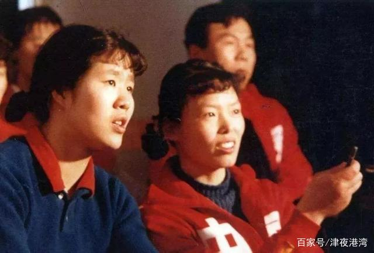
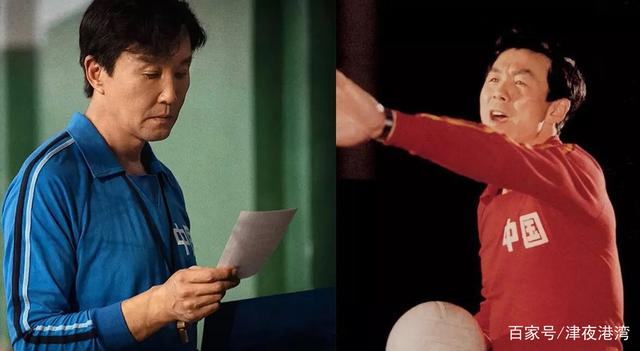
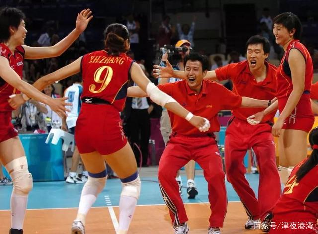
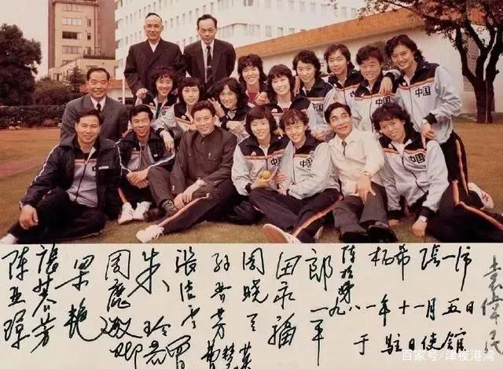

《夺冠》，虽然也可以算作主旋律电影，但是却非常真实的呈现了几代女排人连同几代中国人的成长之路。
真正的女排精神，始自1981——1986年的五连冠。所以于那个年代的人来说，女排有着一个时代的痕迹，某种程度上就是那个上升期整个中国的精神世界在体育上的镜像呈现。
其实我们这一代80后以及90后、00后们，并不能特别真切的理解女排精神。毕竟我们成长起来的时候，中国体育已经开始走上了第一集团行列（当然，男足除外）。
陈可辛的《夺冠》，可以说以影像的形式，一点点还原了女排五连冠时的执着精神，以及2008年奥运会和2012年奥运会女排所经历的变革。
我倒是从《夺冠》中看到了另一种视角，或许是陈可辛试图想要传达给观众的。
体育从来都不仅仅只是竞技，特别是在中国。体育被赋予更多的意义，比如团队精神，比如集体主义。特别是上世纪八、九十年代，恰逢中国改革开放初期，一切都变得不一样了，连同我们在体育竞技场上的表现，都变得不仅仅只是体育本身了。
所以，我们最初的体育，都被冠以为国奉献、甚至会不惜牺牲自我，以便牺牲小我从而成全大我。可是，诚如陈可辛借巩俐之口所表达出来的，比赛不应该是这些姑娘的全部，而应该只是她们生活中的一部分。她们对待比赛的态度，除了全力以赴以外，更要学会享受比赛。
当然，欲戴王冠必承其重。可是，有很事情，如果给予的太多，就会变得愈行愈慢，甚至动作变形。
还好，我们在《夺冠》中看到了这种可能性，哪怕仅仅只是影片。我们有理由相信体育也在变得更加自然和纯粹，哪怕这个过程会没有我们想象中的那么简单。
